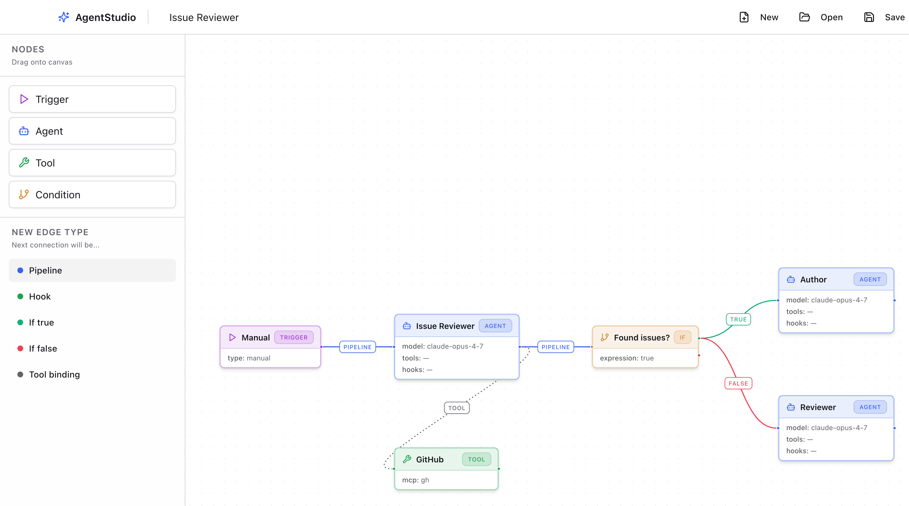
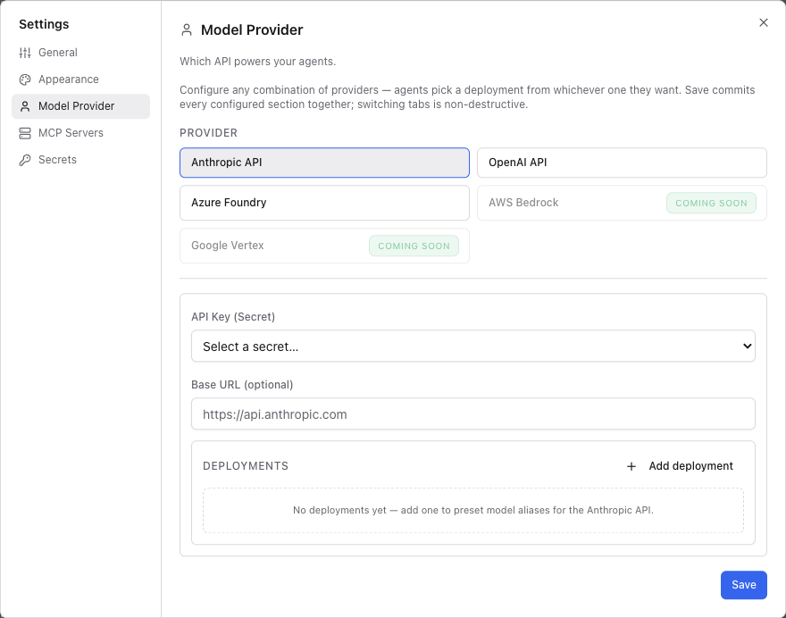
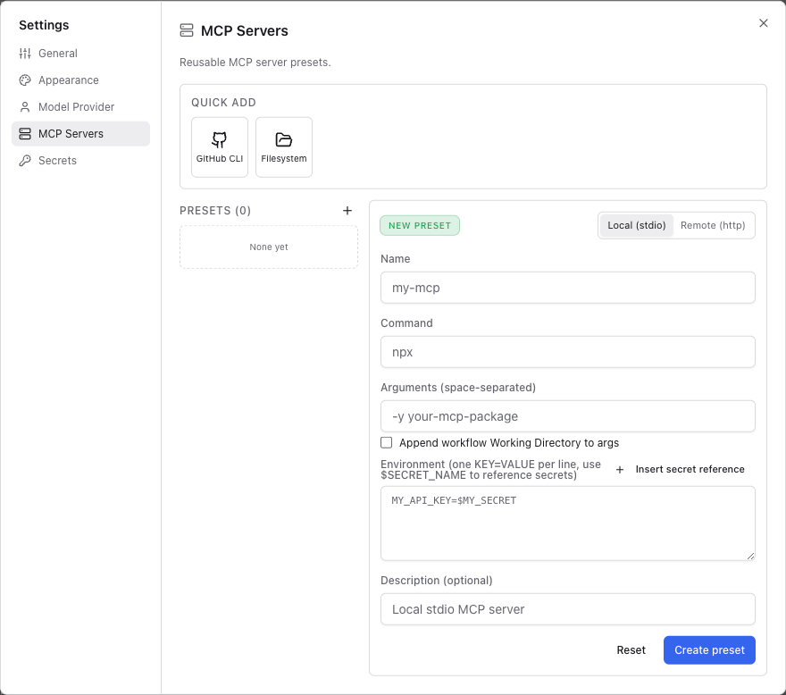
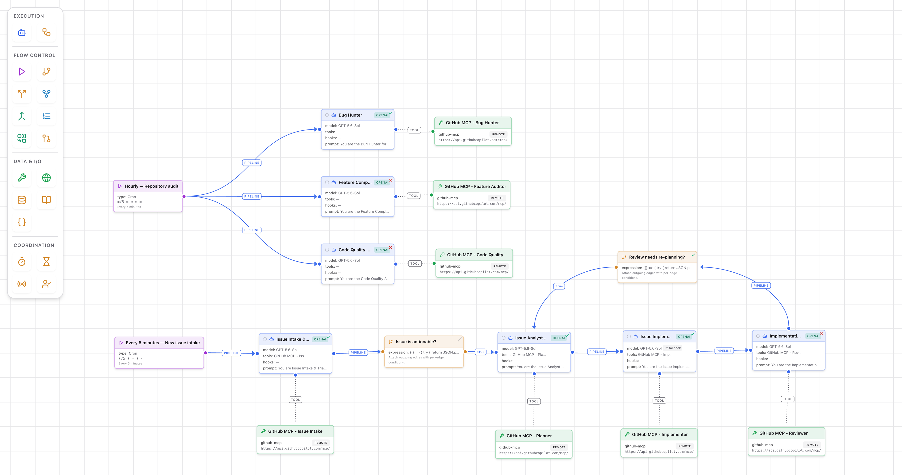
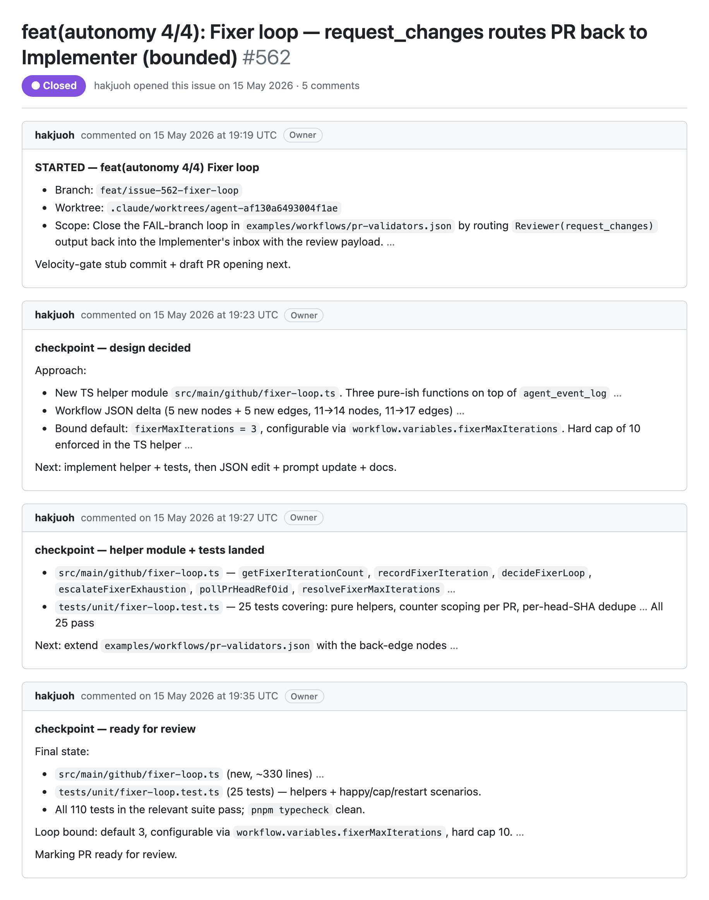
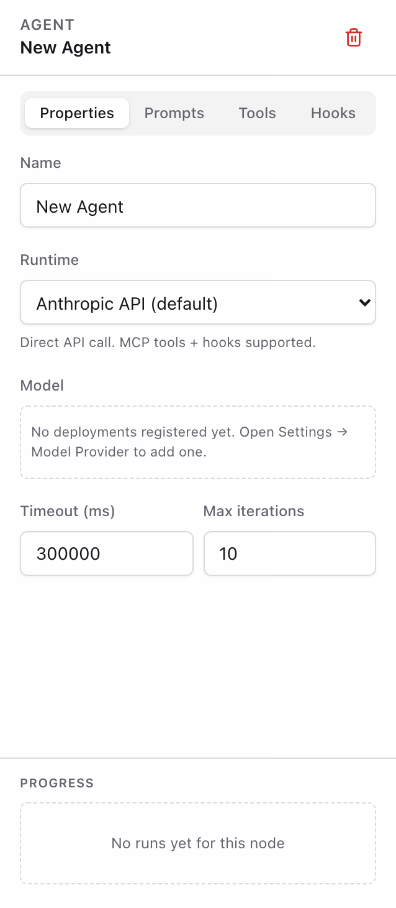
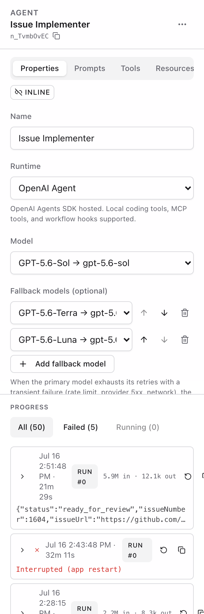
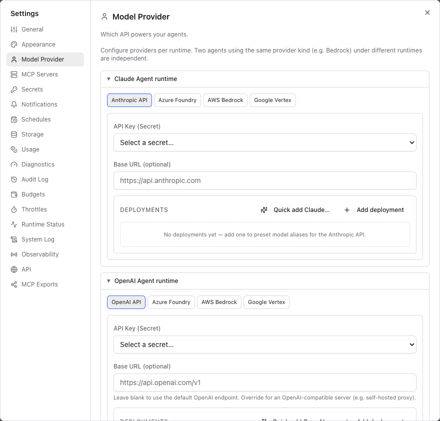
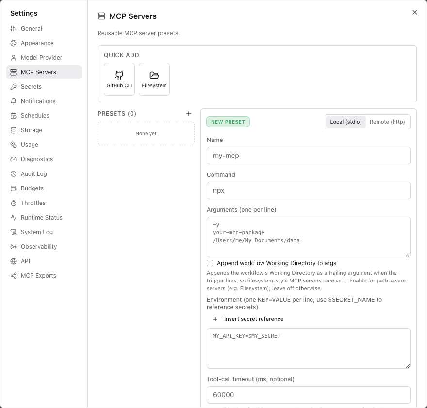
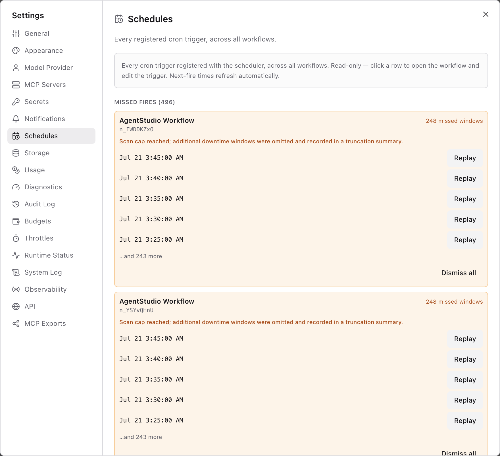

Building an Agent Workflow
Experience with a multi-agent loop on a real codebase
A spectre is haunting the world — the spectre of agents.
Agent-based software development has firmly established itself as the dominant approach in software engineering. A coding assistant no longer merely completes a line or answers a question. In most day-to-day development work, an agent reads the repository, edits files, runs the tests, and checks its own results before handing the change back.
Coding with large language models, known as LLMs (Brown et al., 2020), began to spread in 2021, when models trained on code showed that natural-language descriptions could be turned into working programs (Chen et al., 2021; Austin et al., 2021; Li et al., 2022), and open code models followed soon after (Nijkamp et al., 2023; Rozière et al., 2023). Instruction tuning and chain-of-thought prompting then made such models far easier to direct and to reason with (Ouyang et al., 2022; Wei et al., 2022). The idea of an agent took shape in this period (Yao et al., 2023; Schick et al., 2023; Shinn et al., 2023). An agent carries out a given task with tools, observes the results, and iterates until the work is done (Wang et al., 2023; Xi et al., 2023). Software engineering became its proving ground. A benchmark built from real issues in open-source repositories turned everyday maintenance work into a test (Jimenez et al., 2024). An agent equipped with an interface designed for it showed that the interface between an agent and the computer matters as much as the model itself (Yang et al., 2024). Other systems explored teams of cooperating agents that converse and divide the work among themselves (Qian et al., 2024; Hong et al., 2023; Wu et al., 2023).
This April, an opportunity arose to access LLM resources directly. I took it as a chance to understand the developments described above, and to examine how an agent environment works and how it can be put to use.
Reading about it was not enough. The definitions had already converged. Agents were described as systems in which the model directs its own process and tool use (Anthropic, 2024), or as systems that independently accomplish tasks on a user’s behalf (OpenAI, 2025). Methods for writing programs and building systems with agents were being introduced as well. Some agents resolved real software issues (Yang et al., 2024), teams of agents built software together (Qian et al., 2024; Hong et al., 2023), and frameworks let others compose agent applications of their own (Wu et al., 2023). What I lacked was a feel for the environment around the model. Commercial systems existed at the time, but apart from reaching the LLM directly, I had little access to how they worked inside. So I decided to build one myself.
Starting from zero
The idea was to give agents the shape of a business process diagram. In notations such as BPMN, a process is a flow of activities joined by events and gateways, and anyone can read it at a glance. I wanted the same for agents. An independent agent would be defined together with the tools it may use, and the flow between agents would be started and connected by triggers and conditions. The program would be a simple canvas on which such a flow is drawn rather than coded, and the drawing itself would be the runnable definition. I named it AgentStudio (Oh, 2026). Its repository is private, so the code and the issue tracker described below cannot be browsed by the public. Work began on 12 May 2026 from zero lines of code.
The method was plain. I opened Claude Code, described what I wanted in a prompt, and then asked for the next change. Most of the work was done with Claude Opus 4.7 and its context window of one million tokens, which is the model that the commits record as their co-author. A first prompt produced the canvas. Later prompts added an icon palette, the choice of a model provider, autosave with undo and redo, and support for MCP servers and secrets. All of it landed within an hour of the first commit.

A palette on the left offers four kinds of node. A trigger starts a flow. An agent holds a model, its instructions, and the tools it may use. A tool connects an agent to an outside capability, and a condition picks the next step by evaluating an expression. Edges come in five kinds. A pipeline edge passes work from one node to the next, and a tool binding edge attaches a tool to an agent. A true or false edge leaves a condition along the branch that matches its result. A hook edge runs another node at a chosen moment in an agent’s own life, namely before a tool call, after one, when the agent stops, or when it fails. The canvas also shows each agent’s model and its tools at a glance, so a flow can be read without opening anything.
AgentStudio is a desktop application built on Electron, with a front end written in TypeScript and React. The canvas is built on React Flow, the interface components follow ShadCN with Tailwind CSS, and state is kept in small Zustand stores. Workflows, settings, and secrets live in a local SQLite database, and the secrets are encrypted with the key store of the operating system. Everything that is not drawn on the canvas is configured in a settings dialog, and two constraints of my situation shaped it. The first was models. At that time the only way I could reach models was through Azure, which offered Claude and GPT models, so the provider layer was built around Azure Foundry. The dialog also lists the Anthropic and OpenAI APIs, but Azure is what I used. The second was tools. The work needed access only to GitHub and to the local system, so those are the only two MCP servers that the dialog offers as quick add entries. Saving came early as well. Workflows are saved automatically to the local database, can be saved by hand, and can be undone and redone. Within that day the program also gained a sidebar for managing several workflows and live discovery of the tools that each MCP server offers.


Everything was kept in git from the first commit, which already contained 48 files and about 2,900 lines of TypeScript. On that first day alone the history holds 149 commits between a quarter past three in the afternoon and a quarter to midnight, 58 of them merges, because several branches were being worked on at the same time. The log is therefore also a diary of the build, which is how I can say what existed on which day.
The loop
The next step was to point the program at itself. I registered a workflow inside AgentStudio whose job was to improve AgentStudio, so that the repository of the program became its own first workload. I created it on the afternoon of the first day and refined it over the following days. Once it was running, I no longer needed to sit at the keyboard. The workflow also had to be able to improve itself, which is why a command line interface was added, so that agents could read and edit workflows without the graphical interface. The runtimes arrived in the same days. A Claude Agent SDK runtime was added just after midnight on 13 May and an OpenAI Agents runtime later that day, and a cron scheduler let workflows start by themselves. The workflow holds two flows.
The first flow carries out the issues. A cron trigger wakes an issue reviewer, which reads the open issues on GitHub and picks the oldest few that can actually be acted on. A judge decides whether any of them is worth doing, and a planner turns the chosen issues into a plan that names the files to change. The plan is forked so that several author agents can work at once, each on a new branch in its own isolated worktree and never on the main branch. A verifier checks every patch, a join collects the results, and a lander opens the pull requests, merges them, closes the issues, and cleans up. If an integration fails, a review agent reports what went wrong instead.
The second flow finds the work. Every ten minutes three scouts start in parallel, and each has a lane of its own. One hunts for bugs and regressions by exercising the product, one proposes small features and smooths rough edges, and one proposes structural improvements to the quality of the code. Each files what it finds as a GitHub issue. To keep them from repeating themselves, every scout was told to read the existing issues, open and closed, before filing anything. A candidate that resembles an existing issue is dropped instead of filed again. The scouts also work on small budgets, so a quiet run that files nothing counts as correct.
Triage decides which issue comes next. Every issue carries exactly one label for its severity, from low to critical, and one label for its category, which is a bug, an enhancement, documentation, a question, or a gap. A check in the continuous integration pipeline closes new issues that lack them. In its current form the intake step works on one issue at a time. Work that has already started comes first, beginning with an open pull request and then an existing branch. Otherwise the step takes the issue with the highest severity and, among equals, the oldest one. Before claiming it, the step checks that the issue is actionable, well scoped, not a duplicate, not already fixed, and possible to resolve by changing the repository. A claim is an assignment together with a hidden marker comment, written once, and a branch or a pull request counts as durable progress that is never restarted from scratch.
Together the two flows close a circle. The scouts file issues and the first flow resolves them. The circle ran by itself, and I only stepped in now and then. I paused it for a while in two cases, when access to the models failed and when the issues piled up to more than a hundred beyond what the loop could process. In the second case I let the loop work through the issues before it went back to finding new ones.
The screenshot below shows the two flows as they stand today.

They are the same two flows as above and they work in the same way, although some of the roles have been renamed and regrouped. The upper flow is the one of the three scouts, now called the bug hunter, the feature completeness auditor, and the code quality auditor. The lower flow is the one that carries out the issues, now with an intake step, an analyst, an implementer, and a reviewer, and with a way back to the analyst when a review asks for a new plan. During the period of the loop, models from both Claude and OpenAI were used side by side.
The review and merge steps of the loop came on 15 May 2026. Four issues were filed within seventeen seconds as the four parts of a track called autonomy, which aimed to let agents review and merge pull requests without a human in the loop. The first allowed agents to review and merge pull requests. The second created the reviewer. The third wired the reviewer and the automatic merge into the validators. The fourth closed the loop with the bounded fixer. Each part was built in its own pull request, and the last of the four merged about eighty minutes after the first issue was filed. Since then four validators check every pull request in parallel, covering a code review, a static security analysis, a secret scan, and a dependency audit. A reviewer agent reads the results and returns a strict verdict, and ordinary code, not the model, submits the actual review and refuses to let an agent approve its own work. If changes are requested, the pull request goes back to its author, three times at most by default, and after that the workflow opens an issue instead of trying again. An approved pull request merges itself, and an hourly janitor workflow removes the branches it leaves behind. The comments on one of them read like a laboratory notebook. The agent announces that it has started and names its branch and worktree. It then posts a comment when it settles on a design, when its helper module and tests land, and when the work is ready for review.

What the loop changed
By the end of the run the repository counted 1,618 commits over 21 days with commits, 1,468 issues, and 920 merged pull requests. The branch names show who wrote what. The implementer of the loop names every branch after its issue, and 410 of the merged pull requests carry such a name. Together they add about 183,000 lines and remove about 34,000, yet a typical one is small, touching four files and about 300 lines. It is also quick, with a median of 20 hours between the filing of an issue and the merge of its pull request. Most of the issues behind them were rated low or medium in severity, 230 and 128 of them, while 37 were rated critical. Bugs and enhancements split the work almost evenly, with 208 issues labelled as bugs and 176 labelled as enhancements.
What these pull requests did is mostly modification rather than addition. The first words of their titles say so, because fix, make, validate, reject, bound, and admit lead the list. Inputs are now validated and bounded before they are trusted, whether they are workflow imports, workspace archives, batch files, plugin metadata, or the event streams of a run. Writes are now all or nothing, so exports and database backups are published atomically, run reports no longer overwrite each other, and polling and MCP resource triggers are admitted in a single step. Corrupted data is now quarantined or treated as unavailable instead of being executed, which covers prompts, runtime identities, and consent decisions. Secrets are better protected, since HTTP nodes gained an explicit secret access policy and secret headers are stripped when a redirect leaves the original site. Panels that once failed silently, such as the schedules, throttles, and approvals pages, now recover from a failed refresh and keep the latest answer. The command line interface became consistent, with every verb registered in its contract, options validated before anything happens, and clean output for machines. Five of the largest pull requests only split oversized modules into smaller ones, and another group made the tests pass on Windows.
Genuinely new capabilities were few, and they grew out of what already existed. Notifications gained retention policies and a visible desktop capability, and every notification scope is now exposed in the settings. The outcome of a backup restore is shown after the application relaunches. The engine diagnoses a missing Electron bundle before it starts as a daemon, and auxiliary model calls now follow the same rate policies as the main ones. Storage and discovery of workflow templates are bounded.
The larger additions came earlier, in the numbered waves of May and early July, before the first of those pull requests appears on 13 July. The dates are not continuous, because the work happened in two stretches. After 18 May I had other work to attend to, so I stopped for about seven weeks and picked the project up again on 10 July. In May, workspaces with lanes arrived in six waves, together with their own secrets, MCP bindings, signals, and an export and import archive. A per-agent queue with a dispatcher and a trace view replaced the single synchronous run. A watchdog that diagnoses stalled agents, long-term memory for agents with a crash-safe reconcile, and a Stalled Task Inbox for work that needs a decision followed. A mutation interface and a control socket let the command line edit workflows, a versioned JSON contract fixed its output, a prompt library was added, runs could notify and call outbound webhooks, and a master switch can pause every trigger of a workflow. July brought, among other things, the approval gate, OTLP tracing, and crash-safe runs.
The panel of an agent shows how much surface the program gained. On the first day it had four tabs, namely properties, prompts, tools, and hooks. Today it has seventeen, and the thirteen new ones cover resources, plan, episodes, memory, inbox, watchdog, output, guardrails, health, test, secrets, tool calls, and a live view. It also lists the runs of an agent with their token usage, offers fallback models, and marks the runs that an application restart interrupted.


The settings dialog tells the same story. The dialog of the first day had five pages. Today it has eighteen, with pages for schedules, budgets, throttles, an audit log, and observability, among others. Model providers are now configured per runtime, so the Claude Agent runtime and the OpenAI Agent runtime each offer their own choice of provider, including AWS Bedrock and Google Vertex. The page for MCP servers still offers quick add entries for just GitHub and the file system, although each preset has gained options such as a time limit for tool calls.


One quiet safeguard is visible on the schedules page. By default the scheduler does not run the windows that it missed while the application was stopped. It records them and lists them there, where a person can replay or dismiss them.

What I learned
Looking back at the loop, I took lessons from it. They concerned how an agent environment should be set up when it is built, and what it takes to keep it running.
The first lesson was that instructions must be explicit. When an instruction is vague or ambiguous, the results change a great deal from one run to the next. This fits what research on prompts shows, because the wording of an instruction and even small differences in its format can change the outcome by a wide margin (Zhou et al., 2023; Sclar et al., 2024). The scouts show it best. A lane such as finding bugs or proposing new features sounds clear to a person, yet it leaves nearly every decision to the agent, namely what counts as a bug, how sure the agent has to be, how many reports are enough, and in which form they are filed. The results of these open decisions were uneven. One early report, rated critical, claimed that a dependency was missing, and the agent that investigated it found a false positive that came from a typecheck run against stale modules. Other reports described problems that the main branch had already fixed, and the intake step had to spend a run to find that out. Within eleven minutes on 13 July, seven reports were filed, and the six that lacked the required labels were closed as invalid, even where the intake agent confirmed that the cited code behaved as described. So the instructions grew more specific. A bug has to come with concrete evidence in the code and a credible way to reproduce it, and speculation, ideas for features, and opinions on style are not allowed. A missing feature is not brainstormed but grounded in what the documentation promises. A finding about quality has to name the exact behavior that is untested or the responsibility that is duplicated. Every candidate is searched against open and closed issues several times before it is filed, the labels and the issue form are mandatory, and a run may file one issue at most. Every agent in the loop therefore received instructions that name its lane and its budget, the tools it may use, the exact shape of its output, and the cases in which it must do nothing.
The second lesson was that the choice of the model matters, and that the work a model creates has to be watched. A bug that one model reports is sometimes no bug at all when another model checks it, and then effort is spent on work that nobody needs. Models are known to state things that are not true (Ji et al., 2023), and a model that judges tends to favour its own answers (Zheng et al., 2023). That is also a reason to give finding, implementing, and reviewing to different agents. Choosing the best model of one provider does not settle the matter, because a model of another provider can reach a different verdict on the same report. Choosing a mid-range or smaller model to save money is no safe saving either, because a weaker judgment files more reports that have to be checked and writes more patches that have to be redone, and each of them costs a full run. A single run of the implementer, as listed in the panel shown earlier, read 5.9 million tokens to write about twelve thousand, so a report that turns out to be no bug is not cheap. The scale made this visible. In the second stretch the scouts filed 831 issues in two weeks, 72 percent of them rated low in severity, and 251 of them were still open at the end. A model that works on a task can create new problems while it solves the old one. Code that passes the visible tests can still be wrong (Liu et al., 2023), and models struggle to correct their own reasoning without feedback from outside (Huang et al., 2024). Each new problem becomes a new task, so the amount of unnecessary work keeps growing unless somebody watches it. I therefore had to keep an eye on what the loop filed and on how fast the issues piled up.
The third lesson was that running an agent costs more than it seems to, and that the cost is hard to predict. Cost has become a research problem of its own, and an agent pays it again at every step (Chen et al., 2024; Yang et al., 2024). In the runs recorded in the database of the application, the 4,205 agent executions that reported their usage consumed about 1.53 billion input tokens and about 7.2 million output tokens. These totals are only a lower bound. Recording of token usage did not start at the beginning, the work that I did by hand belongs to the whole process but leaves no record, I do not know how errors were counted, and 92 further executions reported nothing. The input outweighs the output by a factor of more than two hundred, because every step of an agent reads its instructions, its history, and the results of its tools again. Caching softens this, and about three quarters of the input tokens were served from the key-value cache of the provider (Kwon et al., 2023; Zheng et al., 2024). A cached token is still billed at a different price than a fresh one, so the same number of tokens can cost very different amounts. What the provider reports makes a forecast harder still. Every provider counts tokens with its own tokenizer, so the input of a call can be estimated only roughly beforehand and can be confirmed only afterwards, from the information that the provider returns. The SDK that runs the OpenAI agents reports tokens but not money, so the cost in dollars has to be worked out from a price list that the provider can change. A failed attempt can leave no usage record at all, which is the case for 57 of the failed executions, and the limits on the rate of requests are not easy to read in advance, as the 29 failed runs that ended in rate limit errors showed. Tokens were the only usage figure that the runtime reported, so they became the unit in which I could plan, and the application now has pages for usage, budgets, and throttles to keep them in view.
These lessons, together with what the recursive improvement of AgentStudio revealed about the things that an agent system must have and the things that an agent needs in order to work, made it possible to carry out three tasks at the same time. The first was a book, written in order to learn how a biopharmaceutical product is made from start to finish, and how data management, ontologies, and machine learning relate to that process. The second was a Protégé MCP plugin, built to bring agents into the ontology editor. The third was an assistant in connectCenter. I will describe how the three were carried out together in the next article.